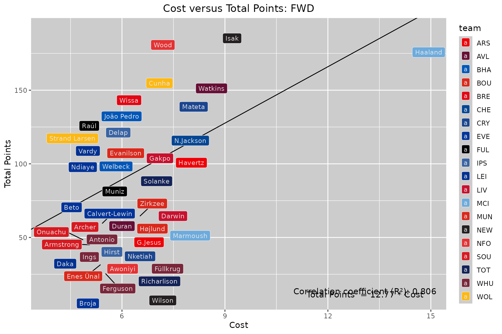
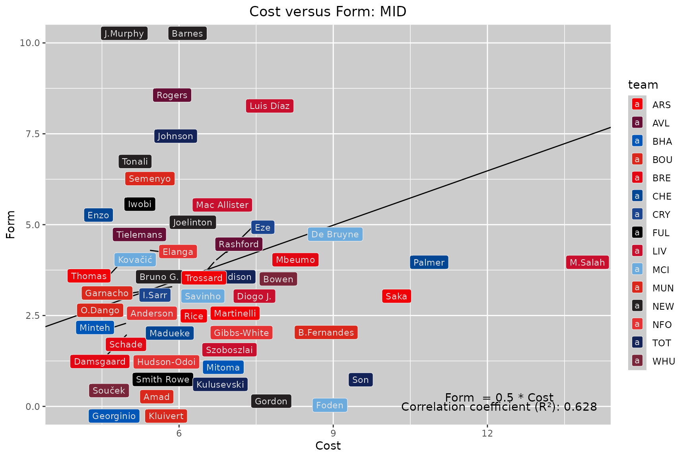

Plotting-Players
Plotting-Players.RmdInstallation procedure
Since the fpl is a package hosted on Github, you will need to download it with the “remotes” package.
Download the data
from the official Premier League API at ‘https://fantasy.premierleague.com/api/bootstrap-static/’ using the function get_premier_stats()
# Download Premier League Data
premier_data <- get_premier_stats() # Grabs current Premier League Data
# Filter data by players
players <- filter_players(premier_data, get_photos = F) # use default photos on
# Sample of player data
head(players[c("team", "web_name", "form", "points_per_game", "cost", "position", "goals_scored")])
#> team web_name form points_per_game cost position goals_scored
#> 1 ARS Fábio Vieira 0.0 0.0 5.4 MID 0
#> 2 ARS G.Jesus 3.2 2.5 6.7 FWD 3
#> 3 ARS Gabriel 2.4 4.2 6.4 DEF 3
#> 4 ARS Havertz 3.0 4.3 7.8 FWD 8
#> 5 ARS Hein 0.0 0.0 4.0 GKP 0
#> 6 ARS J.Timber 2.6 3.5 5.6 DEF 1The output player data is a data.frame and can be analyzed or selected with additional packages or in-built R scripts. Below is an example of finding the top 10 scoring players for a given position.
# Select position
forwards <- players[players$position == "FWD",] # selecting using data.frame methods
# Order the forwards
column_order <- order(forwards$goals_scored, decreasing = TRUE)
# Create organize data.frame
forwards_ordered <- forwards[column_order,]
# Goals Scored
head(forwards_ordered[1:6]) # Select first 6 cols to display
#> team web_name form points_per_game cost position
#> 464 MCI Haaland 5.8 6.0 14.8 FWD
#> 535 NEW Isak 8.0 6.8 9.5 FWD
#> 584 NFO Wood 8.6 6.1 7.1 FWD
#> 65 AVL Watkins 6.2 5.0 8.9 FWD
#> 141 BRE Wissa 4.6 5.2 6.2 FWD
#> 722 WOL Cunha 3.2 5.4 6.9 FWDFiltering using data.table
# Another way to order columns with an additional package: data.table
library(data.table)
# Add data.table functionality with data.table
players_dt <- data.table(players)
# order by points per game, selected first 6 columns for display
ordered_forwards <- players_dt[position == "FWD", ][order(-points_per_game)]
# Points Per Game
head(ordered_forwards[,1:6]) # Select first 6 cols to display - data.table way
#> team web_name form points_per_game cost position
#> <char> <char> <num> <num> <num> <char>
#> 1: NEW Isak 8.0 6.8 9.5 FWD
#> 2: NFO Wood 8.6 6.1 7.1 FWD
#> 3: MCI Haaland 5.8 6.0 14.8 FWD
#> 4: WOL Cunha 3.2 5.4 6.9 FWD
#> 5: BRE Wissa 4.6 5.2 6.2 FWD
#> 6: AVL Watkins 6.2 5.0 8.9 FWDNow let’s plot!
The primary things to remember before plotting is to look at the names of the columns that are present.
head(colnames(players), 15)
#> [1] "team" "web_name"
#> [3] "form" "points_per_game"
#> [5] "cost" "position"
#> [7] "goals_scored" "can_transact"
#> [9] "can_select" "chance_of_playing_next_round"
#> [11] "chance_of_playing_this_round" "code"
#> [13] "cost_change_event" "cost_change_event_fall"
#> [15] "cost_change_start"Choose two columns you want to plot
For this example, we will plot “cost” versus the “total_points”, grouping by forwards, and displaying the players by name. Note: There is some “smart” matching when inputting the columns, but it works best if you can input exactly the column names. It will take a few seconds depending on the group.
Some plots may have overlapping points, if there are to many players!
fpl_plot(players, x = "cost", y = "total_points", group = "names", pos = "FWD")
Plotting by Team Icon
#fpl_plot(players, x = "cost", y = "total_points", group = "teams", pos = "FWD")Plotting by Team Photo
Note: Some photos might be missing
#fpl_plot(players, x = "cost", y = "total_points", group = "photos", pos = "FWD")To many players, no problem
The plotting function works for almost any subset of the players data.frame. So, you can subset or remove some players from a table and then plot! This is especially the case with midfielders. Top percent filters by total_points.
fpl_plot(players, "cost", y = "form", group = "names", pos = "MID", top_percent = .85) # take top 85 percent